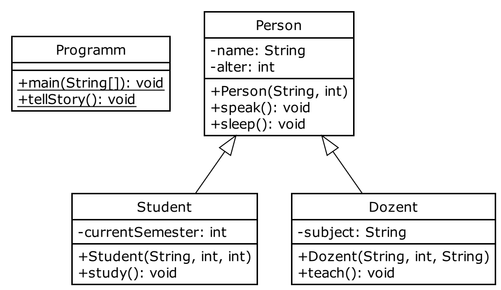

https://github.com/Trivo25/tud-java-course
December 16, 2021
Florian Kluge, Moritz Schulz
Florian.Kluge@mailbox.tu-dresden.de
Moritz.Schulz2@mailbox.tu-dresden.de
Objektorientierte Programmierung: Vererbung
Florian Kluge
Florian.Kluge@mailbox.tu-dresden.de
Moritz Schulz
Moritz.Schulz2@mailbox.tu-dresden.de
extendssuperclass und subclass
String meineMethode(int param)void meineMethode(String param)static int sumInt(int a, int b) {}
static float sumFloat(float a, float b) {}
static double sumDouble(double a, double b) {}!static int sum(int a, int b) {} // Funktion, welche a + b rechnet
static float sum(float a, float b) {} // nun mit Datentyp float!
static double sum(double a, double b) {} // .. oder double!static int sum(int a, int b) {}
static float sum(float a, float b) {}
static double sum(double a, double b) {}
// zum Beispiel in main(String[] args):
sum(3,5);
sum(4.3f, 5.0f);
sum(0.3d, 16.d);
das geht natürlich auch mit anderen Datentypen:
public static void printTwoVariables(int a, String b) {
System.out.println("a: " + a + " b: " + b);
}
public static void printTwoVariables(boolean a, String b) {
System.out.println("a: " + a + " b: " + b);
}
mit Overloading können wir auch die Anzahl der Variablen verändern
public static void sumOfMultiple(int a, int b) {
System.out.println(a + b);
}
public static void sumOfMultiple(int a, int b, int c) {
System.out.println(a + b + c);
}
public static void sumOfMultiple(int a, int b, int c, int d) {
System.out.println(a + b + c + d);
}
// zum Beispiel in main(String[] args):
sumOfMultiple(1, 1); // 2
sumOfMultiple(1, 1, 1); // 3
sumOfMultiple(1, 1, 1, 1); // 4
constructors können auch ‘overloaded’ werden
class Quadrat {
int hoehe, breite;
public Quadrat(int h, int b) {
this.hoehe = h;
this.breite = b;
}
// Seitenlaenge hoehe gleich breite wenn nur ein Parameter uebergeben wird
public Quadrat(int a) {
this.hoehe = a;
this.breite = a;
}
}
static ... product(/* .. Parameter .. */)
a * b für verschiedene Datentypenfloat, double, int// so soll es verwendet werden:
int a = product(3, 3);
float b = product(3.1f, 0.3f);
double d = product(6.6d, 1.12d);
// wie sehen die einzelnen Methoden aus?static int product(int a, int b) {
System.out.println(a * b);
}
static float product(float a, float b) {
System.out.println(a * b);
}
static double product(double a, double b) {
System.out.println(a * b);
}superclass) zu überschreiben@Overridepublic class Animal {
public void makeSound() {
System.out.println("some generic animal sound");
}
}
class Pig extends Animal {
@Override
public void makeSound() {
System.out.println("oiinkk");
}
}
// zum Beispiel in main(String[] args):
Pig pig1 = new Pig();
pig1.makeSound() // 'oiinkk' und nicht 'some generic animal sound'superclasssubclasspublic class SuperClass {
public SuperClass(String a) {
System.out.println(a);
}
}
class AnotherClass extends SuperClass {
public AnotherClass() {
// ruft den Konstruktor der Eltern-Klasse auf und übergibt die benoetigen Parameter
super("some string!");
}
}public class Person {
String name;
public SomeClass(String name) {
this.name = name;
}
}
class Student extends Person {
public Student(String name) {
super(name);
}
}name übernehmenProfessor extends Person könnte Standardwert für Beruf festlegen‘Class Object is the root of the class hierarchy. Every class has Object as a superclass. All objects, including arrays, implement the methods of this class.’
aus der Dokumentation: [https://docs.oracle.com/javase/7/docs/api/java/lang/Object.html](https://docs.oracle.com/javase/7/docs/api/java/lang/Object.html)
Object
String toString()System.out.println() ruft immer die Methode toString() auf!public class Person {
String name;
public Person(String name) {
this.name = name;
}
public String toString() {
return "Die Person namens " + this.name;
}
}
// zum Beispiel in main(String[] args):
Person max = new Person("Max");
// ruft automatisch max.toString() auf!
System.out.println(max);
// gibt aus: 'Hallo, mein Name ist Max'toString() zur Beschreibung der Personsuper() für die Konstruktoren von Student, DozenttoString() zur Beschreibung der Personsuper() für die Konstruktoren von Student, DozentJava DokumentationSee course materials here: https://trivo25.github.io/tud-java-course/
Check out the Cheat Sheet: http://tiny.cc/java-cs